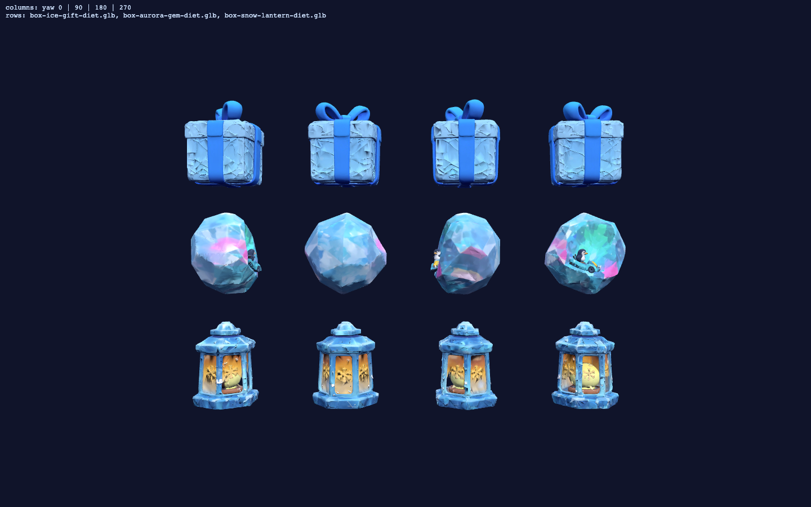

Three generated candidates (tripo_3d, detailed quality, dieted) next to nothing — the shipped box today is the procedural ice crate. Pick ANY SUBSET (variety is the goal — picked designs rotate across the item-box rows, oversize + glow per the race-speed readability rule). Winners get the 512+meshopt ship diet, orientation lab, manifest + mount.

Provenance: jobs b78cff48 / a93cbedd / 5c3d5da7 (2026-07-07, 15cr total), prompts in
tmp/w2-item-boxes/ job records; raw GLBs local-only, diets committed.